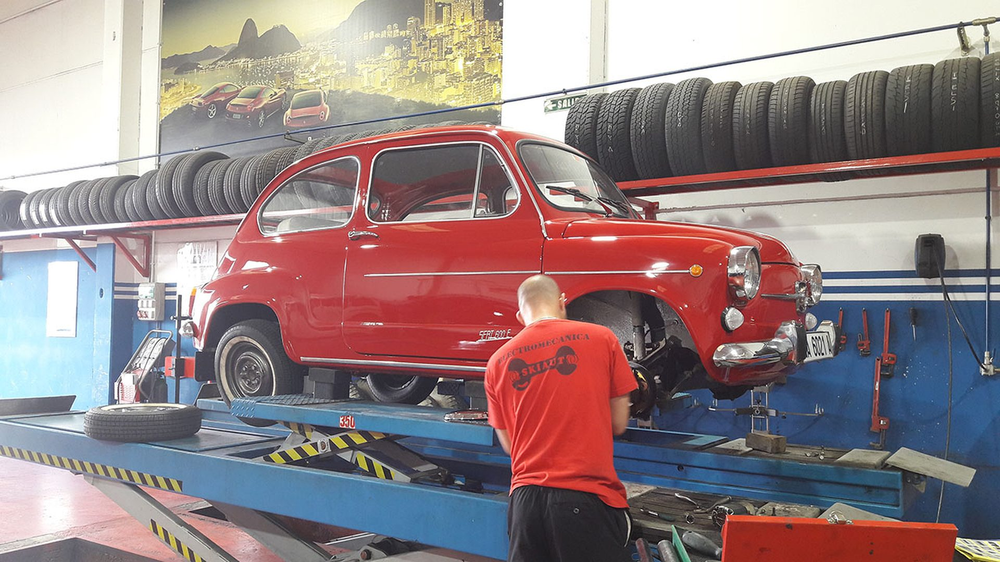
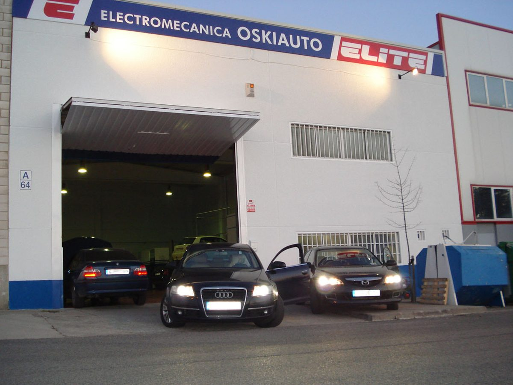
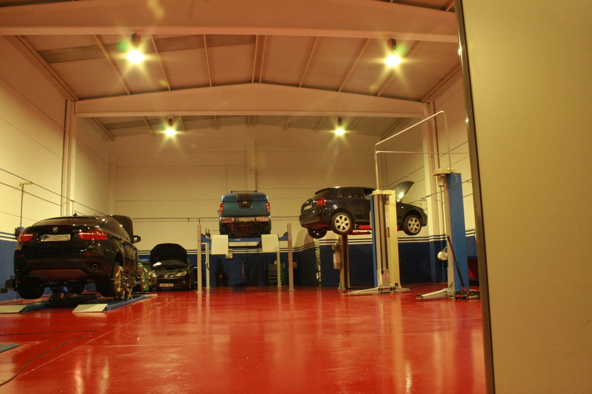
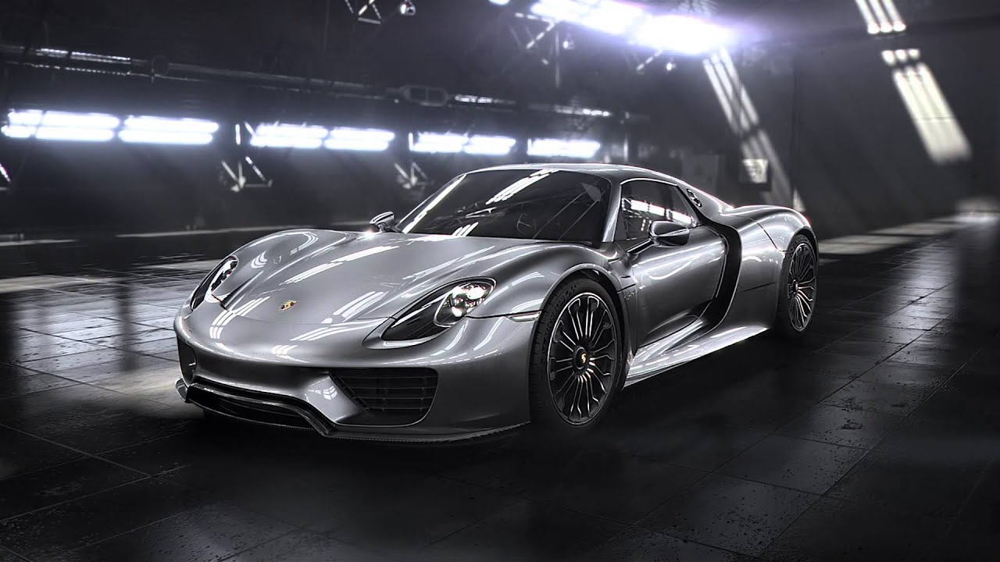
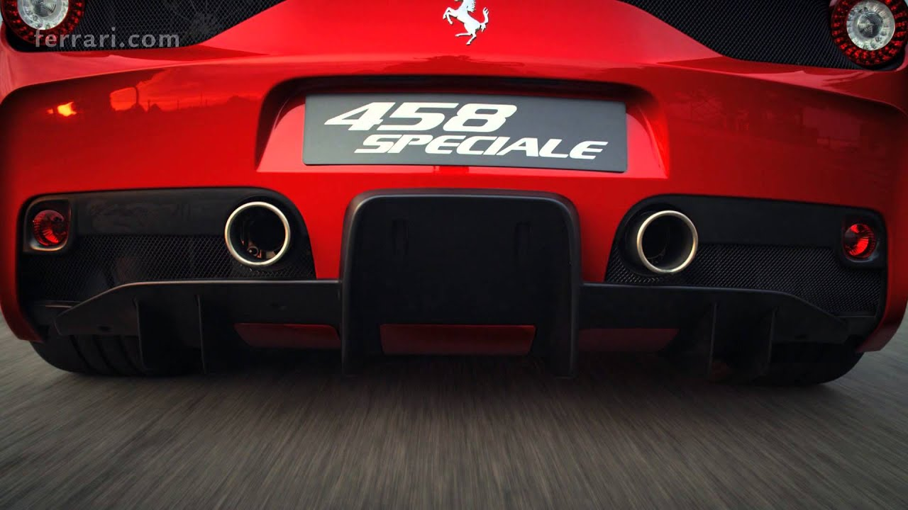
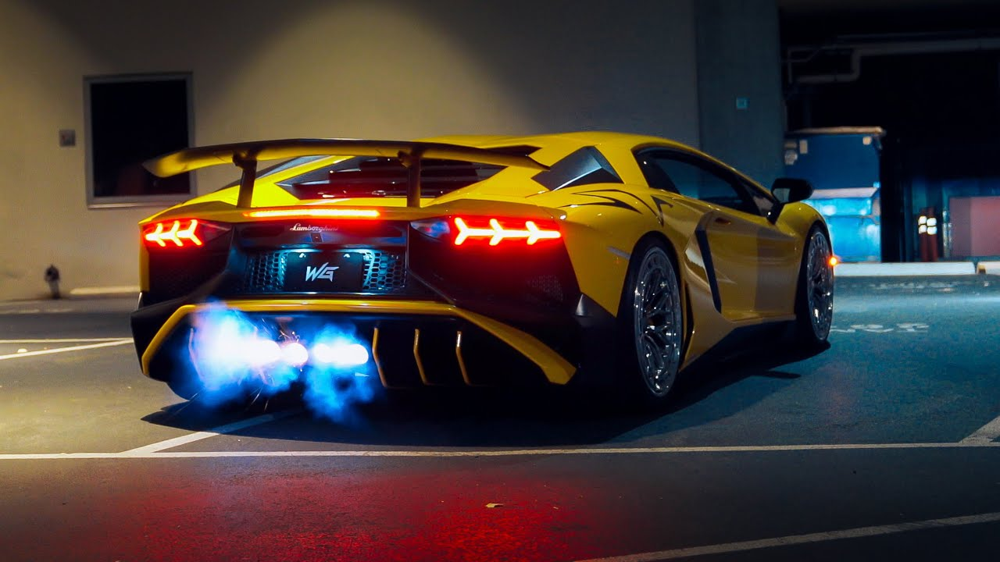

01
Competitividad
Nos adaptamos a las necesidades del cliente, para ofrecer los mejores soluciones a sus problemas con precios competitivos.

Taller multimarca · Noaín, Navarra
En Oskiauto ofrecemos un servicio integral de reparación mecánica y eléctrica de vehículos, nuestras actividades no solo llega a la reparación de todo tipo de marcas de automóviles, en todas sus facetas, tanto sean coches, furgonetas, 4x4 o motocicletas, solucionamos cualquier problema mecánico, de motor, cajas de cambio, frenos, suspensión, electricidad,... usando para ello la tecnología más moderna y los operarios mejor cualificados.
Somos garantía de satisfacción para cualquiera que acuda a nosotros.


Nos adaptamos a las necesidades del cliente, para ofrecer los mejores soluciones a sus problemas con precios competitivos.
Gracias a nuestra experiencia multimarca podemos satisfacer las necesidades de la gran variedad de vehiculos que estan el mercado.
Todas sus dudas o sugerencias serán atendidas personalmente por nuestros técnicos para solventar cualquier contratiempo.
Respetar los plazos marcados por el fabricante para cada vehículo le permitirá maximizar su rendimiento y alargar su vida útil.
02 — Servicios

Las revisiones y mantenimientos que se realizan en los elementos del automóvil son operaciones imprescindibles que contribuyen a evitar averías costosas.

Un freno es un dispositivo utilizado para detener o disminuir el movimiento de algún cuerpo, generalmente, un eje, árbol o tambor.

El embrague es un sistema que permite tanto transmitir como interrumpir la transmisión de una energía mecánica a su acción final de manera voluntaria.

La correa de distribución, banda de distribución o dentada, es uno de los más comunes métodos de transmisión de la energía mecánica entre un piñón de arrastre y otro arrastrado.
03 — Galería


04 — Vídeos



05 — Contacto Principal